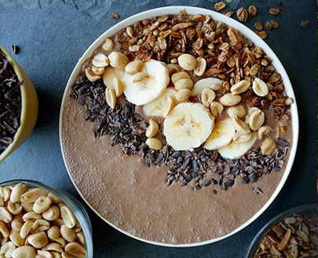

Замочену з ночі, зелену гречку перебити в блендері з молоком та бананом. Додати за смаком ягоди, горіхи, або ж сухофрукти.
- зелена гречка (50г.)
- рослинне молоко (1скл.)
- банан (1шт.)
- горіхи та ягоди
Замочену з ночі, зелену гречку перебити в блендері з молоком та бананом. Додати за смаком ягоди, горіхи, або ж сухофрукти.